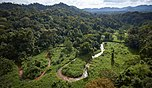

Biosferadel Rio Plátano
La Reserva de la Biosfera de Río Plátano está localizada en los alrededores de río Plátano en La Mosquitia, la región en la costa caribeña de Honduras. Tiene una extensión de 9,871 km² y abarca tanto montañas como tierras bajas de selva tropical con una gran biodiversidad, la reserva ha sido declarada Patrimonio de la Humanidad y Reserva de la Biosfera por la Unesco, en el año 1981. Y si se incluye con la Reserva de la Biosfera Bosawás en Nicaragua que geográficamente son una sola selva, se posicionaria como la segunda selva más grande del hemisferio occidental con más de 33,740 km, después de la selva amazónica en Brasil. Incluso ha participado como una de las siete Maravillas naturales del planeta, además de representar el 7% de la superficie de Honduras,las recientes investigaciones confirmaron que hay 3 veces más animales por hectárea cuadrada más que en la amazónia, convirtiéndose en la selva más densamente poblada del continente.Consta con más de la mitad de los mamíferos conocidos en Honduras, algunas especies mamíferos como lo son; Monos Capuchinos, pecaríes, venados, Tapir o Danto, Perezosos, Oso hormiguero gigante, tigrillo o gato de monte, Jaguar, Pantera negra, entre otros. Se repotaron 511 especies de ves como: tucán y Guacamayo rojo y Verde, Águila Harpía, Hocco major, el águila crestada. Mamíferos acuáticos como Manatí. Hay cerca de 110 especies de reptiles y anfibios como tortugas marinas como terrestres, pitones, anacondas entre otros.
Posee árboles de más de 50 metros de alto y 69 sitios arqueológicos los cuales ayudaron a descubrir la Ciudad Blanca. en 2018 se documentado unas 586 especies de plantas vasculares en las tierras bajas de la reserva. Las condiciones climáticas y la falta de referencias hace que la investigación de la reserva sea complicado, por lo que se desconoce del número de especies en el área, así como de los sitios arqueológicos de las civilizaciones que habitaban allí.
